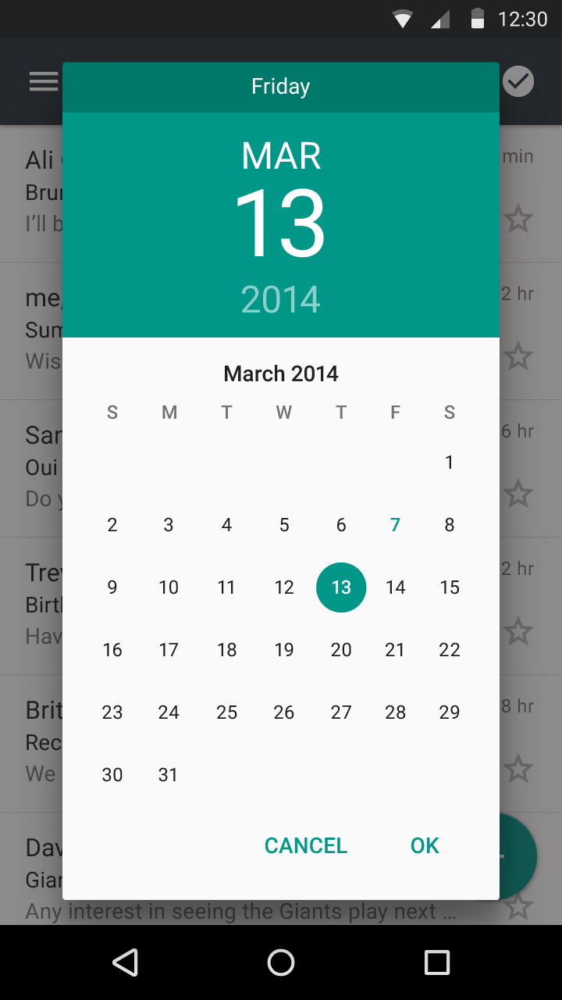
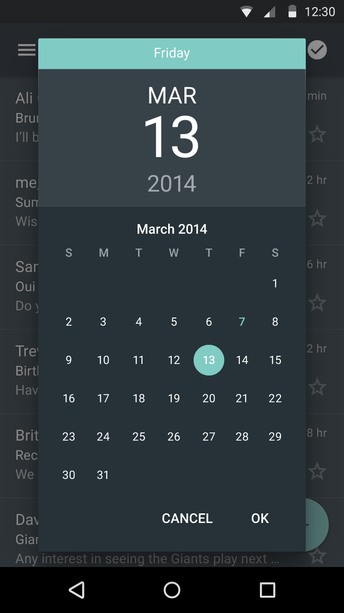
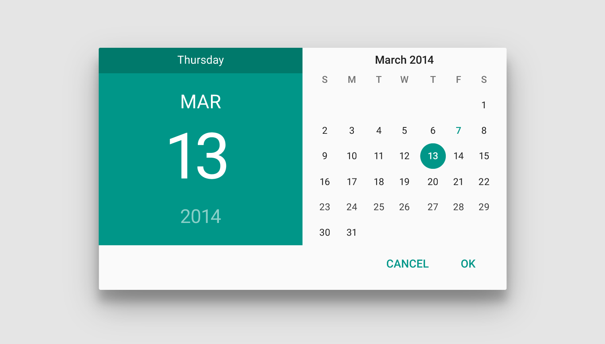
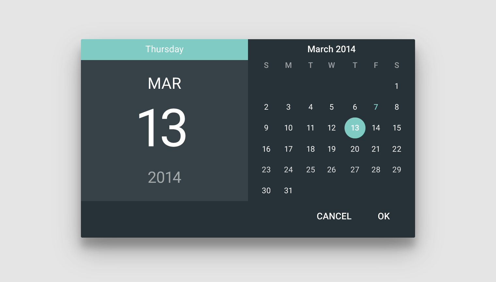
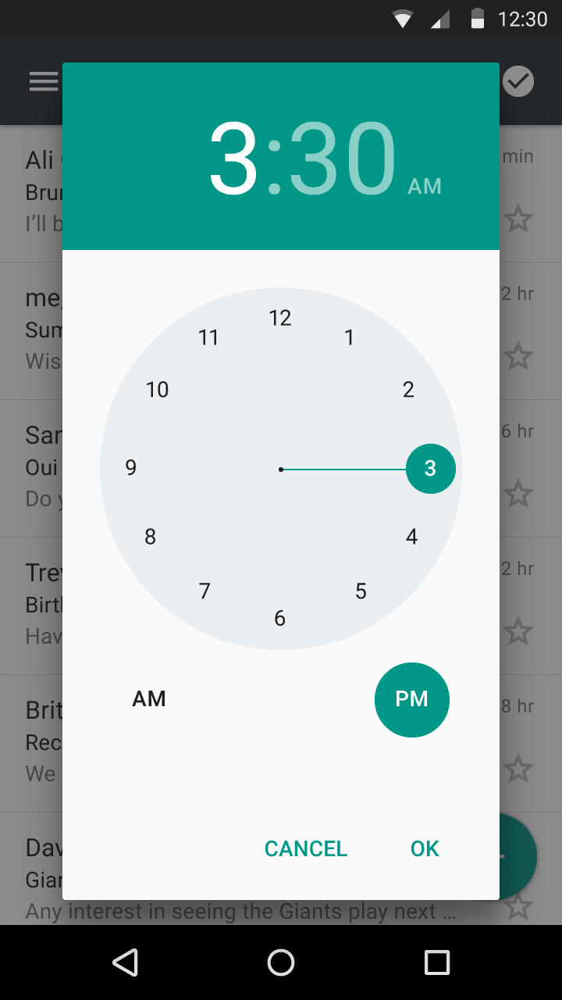
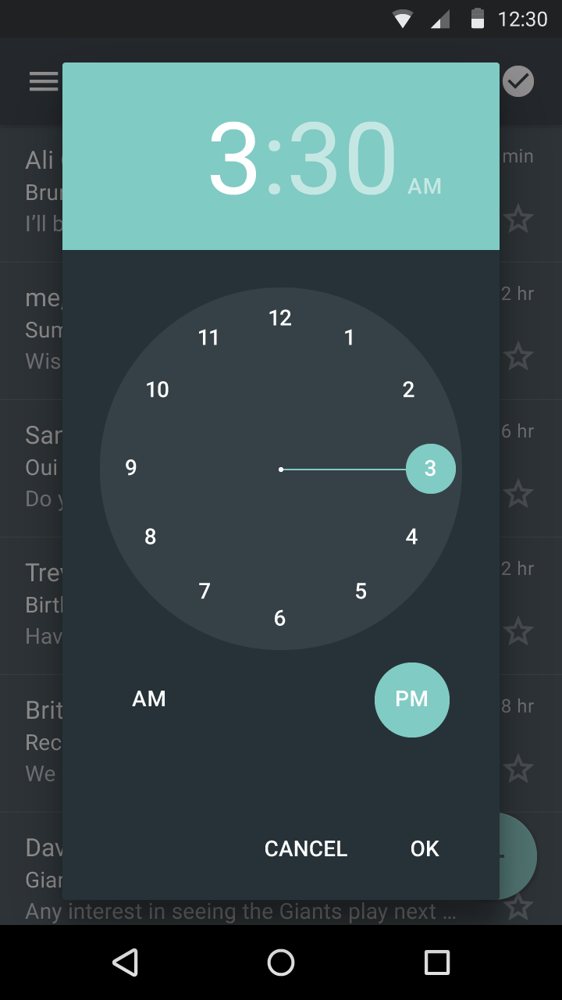

Date Picker
Light and Dark themes in portrait and landscape

Date picker: Light theme, portrait

Time picker: Dark theme, portrait

Date picker: Light theme, landscape

Date picker: Dark theme, landscape
Time
Light and Dark themes in portrait and landscape

Date picker: Light theme, portrait

Time picker: Dark theme, portrait
Date picker: Light theme, landscape